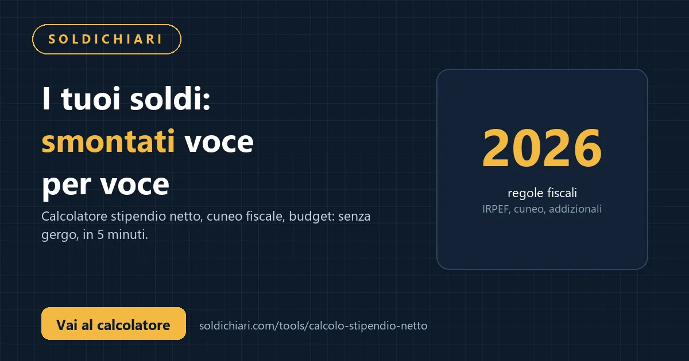

L'8 ottobre 2026 la Commissione europea ha adottato una raccomandazione positiva sulla richiesta italiana di attivare la clausola di salvaguardia nazionale (National Safeguard Clause — Nec) prevista dal nuovo Patto di Stabilità (Regolamento UE 2024/1263). Il via libera apre la strada a fino a 35 miliardi di euro di spazio fiscale aggiuntivo (circa l'1,5% del PIL) per il biennio 2027-2028, da destinare a spese straordinarie su energia (sicurezza dell'approvvigionamento, transizione) e difesa (percorso verso il target NATO del 2% del PIL). Il fascicolo passa ora al Consiglio UE per l'approvazione formale entro un mese.
Cosa è successo l'8 ottobre a Bruxelles
Secondo quanto riportato da ANSA (8 ottobre 2026), la Commissione ha valutato positivamente la richiesta italiana presentata a fine settembre. La National Safeguard Clause è lo strumento che consente a uno Stato membro di deviare temporaneamente dal percorso di aggiustamento strutturale concordato (il famoso "piano quadriennale" del nuovo Patto) quando si verificano eventi eccezionali, fuori dal controllo del governo, con impatto rilevante sui conti pubblici. L'Italia ha invocato due fattori:
- Energia: costi straordinari per la sicurezza dell'approvvigionamento e la transizione energetica in un contesto di volatilità dei prezzi.
- Difesa: necessità di accelerare gli investimenti per raggiungere l'obiettivo NATO del 2% del PIL, in un quadro geopolitico mutato.
La raccomandazione della Commissione non è ancora legge: serve il voto del Consiglio (Ecofin) a maggioranza qualificata. La procedura prevede che il Consiglio si pronunci entro un mese dalla raccomandazione, quindi entro i primi giorni di novembre 2026.
I numeri: 35 miliardi in due anni, 1,5% di PIL
Le stime circolate nelle agenzie (ANSA, Il Sole 24 Ore) indicano un margine complessivo di circa 35 miliardi di euro spalmati su 2027 e 2028. In termini di PIL, equivale all'1,5% — una quota significativa che, se confermata, darebbe al governo Meloni un respiro notevole nella scrittura della prossima legge di bilancio.
Per confronto: la manovra 2025 valeva circa 24 miliardi netti. Qui si parla di uno "spazio" aggiuntivo che non richiede nuove coperture immediate, perché la clausola sospende l'obbligo di ridurre il deficit strutturale dello 0,5% annuo per la quota coperta dall'eccezione.
La posizione dei paesi frugali e il dibattito all'Eurogruppo
Al termine dell'Eurogruppo (l'8 ottobre, prima dell'Ecofin), il ministro Giancarlo Giorgetti ha dichiarato ai cronisti: "C'è stato un ampio dibattito sull'impatto dell'inflazione sui conti pubblici. La nostra proposta ha ricevuto numerosi consensi, tranne che da parte dei paesi frugali" (ANSA, 8 ottobre 2026).
I "frugali" — Olanda, Austria, Finlandia, Danimarca, Svezia — hanno storicamente opposto resistenza a qualsiasi allentamento delle regole fiscali comuni, temendo che le clausole di salvaguardia diventino una scappatoia strutturale. Il loro voto in Consiglio non è bloccante (serve la maggioranza qualificata: 55% degli Stati = 15 su 27, che rappresentino il 65% della popolazione UE), ma il loro peso politico rallenta e condiziona il negoziato.
Extraprofitti energetici: non erano all'ordine del giorno dell'Ecofin
Va fatta chiarezza su un punto che ha generato confusione nei giorni scorsi. Fonti ANSA del 6 e 7 ottobre avevano anticipato che l'Ecofin del 9 ottobre a Lussemburgo sarebbe stato incentrato sulla discussione generale di politica economica e sul dibattito sull'impatto dell'inflazione sui conti pubblici, non sulla tassazione degli extraprofitti energetici. La questione degli extraprofitti (windfall profits) resta un dossier separato, su cui la Commissione non ha presentato nuove proposte in questa sede.
Cosa cambia per la manovra 2027
Se il Consiglio conferma il via libera (probabile entro novembre), il governo potrà:
- Iscrivere in manovra spese per energia e difesa senza doverle compensare subito con tagli o tasse per la quota coperta dalla clausola.
- Presentare un piano di rientro credibile per il post-2028, come richiesto dal Patto riformato.
- Evitare una procedura per deficit eccessivo (Pde) che altrimenti scatterebbe per il mancato rispetto della regola dello 0,5% annuo di aggiustamento strutturale.
Attenzione: la clausola non è un assegno in bianco. La Commissione monitorerà l'uso delle risorse (devono andare a energia e difesa, non a spesa corrente generica) e il Consiglio potrà revocare la flessibilità se l'Italia non rispetta gli impegni.
Il contesto: nuovo Patto di Stabilità, clausole e inflazione
Il nuovo Patto di Stabilità e Crescita (in vigore da aprile 2024) ha introdotto percorsi di aggiustamento pluriennali negoziati caso per caso. L'Italia ha concordato un percorso quadriennale che prevede una riduzione graduale del deficit strutturale. La clausola di salvaguardia nazionale (art. 6 del Reg. 2024/1263) è l'unico meccanismo "di emergenza" per eventi non controllabili.
Il dibattito all'Eurogruppo ha toccato anche l'inflazione residua: diversi ministri hanno notato che l'inflazione, pur in calo, continua a erodere il valore reale del debito ma al tempo stesso rende più difficile il consolidamento fiscale nominale. L'Italia ha spinto per riconoscere questo doppio effetto.
Prossime tappe
- Entro novembre 2026: voto del Consiglio (Ecofin) sulla raccomandazione della Commissione.
- Legge di Bilancio 2027 (ottobre-novembre 2026): se il via libera arriva in tempo, lo spazio fiscale verrà iscritto in manovra.
- 2027-2028: attuazione degli interventi su energia e difesa; rendicontazione alla Commissione.
- Post-2028: piano di rientro verso il percorso di aggiustamento standard.
Cosa significa per te
Nel breve termine: nessun impatto diretto su tasse o busta paga. La partita si gioca a livello di conti pubblici e margini di manovra del governo. Nel medio termine: se la flessibilità viene usata bene (investimenti produttivi in energia e difesa), può sostenere la crescita e l'occupazione; se finisce in spesa corrente improduttiva, il conto arriverà dopo il 2028 sotto forma di aggiustamenti più duri.
Per monitorare come le scelte fiscali europee si riflettono sul tuo stipendio netto e sul potere d'acquisto, usa i nostri strumenti:
💶 Calcolatore stipendio netto → scopri il tuo potere d'acquisto reale
🔧 Budget calculator 50/30/20 → verifica se il tuo bilancio regge
Fonti
- ANSA, Ue: via libera a clausola salvaguardia Italia per energia e difesa, 8 ottobre 2026: ansa.it
- ANSA, Eurogruppo, Giorgetti: ampio dibattito su inflazione, consensi su clausola salvo frugali, 8 ottobre 2026: ansa.it
- ANSA, Ecofin Lussemburgo: focus su inflazione e conti pubblici, non extraprofitti, 6 ottobre 2026: ansa.it
- Il Sole 24 Ore, Patto di stabilità, l'Italia ottiene la clausola di salvaguardia: 35 miliardi per energia e difesa, 8 ottobre 2026: ilsole24ore.com
- PMI.it, Manovra 2027: la clausola di salvaguardia nazionale e i 35 miliardi per energia e difesa, 8 ottobre 2026: pmi.it
- Regolamento UE 2024/1263 (nuovo Patto di Stabilità), articolo 6 — Clausola di salvaguardia nazionale: eur-lex.europa.eu
- Elaborazioni proprie su calcolo stipendio netto (regole 2026: INPS 9,19%, scaglioni 23/33/43%, addizionali nella media nazionale). Non costituiscono consulenza fiscale.
Disclaimer: Questo articolo ha scopo informativo e non costituisce consulenza fiscale, legale o finanziaria. I dati sono tratti da fonti pubbliche (ANSA, Il Sole 24 Ore, PMI.it, Gazzetta Ufficiale UE) alla data del 9 ottobre 2026. Le norme e gli orientamenti politici possono variare. Per decisioni rilevanti consulta un commercialista o un consulente finanziario abilitato.